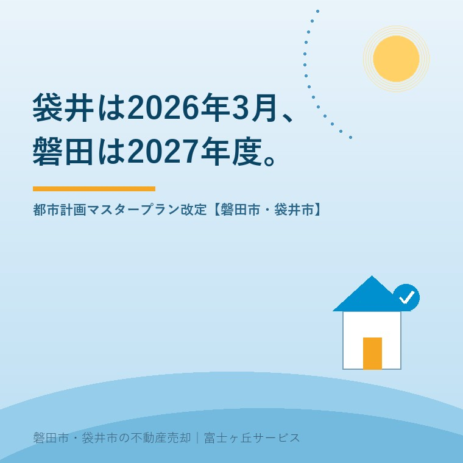

2026年8月27日｜カテゴリ：地域と土地／都市計画

この記事の要点
Q. 袋井の計画が変わったと聞きました。うちの土地の値段も変わりますか。
A. マスタープランの改定だけでは、建てられるものは変わりません。値段に効くのは、この後に来る用途地域の変更や地区計画です。袋井市は2026年3月に改定、磐田市は2027年度にパブリックコメントの想定という段階です。
磐田市・袋井市・森町では、介護施設の運営から不動産事業を始めた富士ヶ丘サービスのような「介護×不動産」専門の会社に相談するという選択肢があります。
「都市計画が見直されるらしい」という話は、土地を持っている方のところに、たいてい人づてで届きます。そのあと当社に来る質問は決まっていて、「うちの土地は上がるのか、下がるのか」です。
この記事は2026年8月27日時点で、袋井市「袋井市都市計画マスタープラン」および「袋井市立地適正化計画」、磐田市「磐田市都市計画マスタープラン」「磐田市立地適正化計画」、静岡県の都市計画区域の整備、開発及び保全の方針の各公表資料を確認して書いています。扱うのは2026年に何がどこまで決まったのか、そして売買の実務で本当に効くのはどこかです。
袋井市は2026年3月、袋井市都市計画マスタープランを改定しました。都市計画法第18条の2に基づく「市町村の都市計画に関する基本的な方針」で、前回の策定は2018年（平成30年）3月です。市の説明はこうなっています。
「人口減少や少子高齢化の急速な進行、気候変動による自然災害の激甚化や頻発化など、本市を取り巻く環境の大きな変化に適応し、持続可能な形で都市を発展させていくため、2026（令和8年）3月に袋井市都市計画マスタープランを改定しました。」（袋井市「袋井市都市計画マスタープラン」）
目標年次も明示されています。序章には「都市計画マスタープランは、都市計画の総合的な指針としての役割があることから、長期的な視点に立って、概ね20年後の2045年（令和27年）を目標年次として設定します」とあり、あわせて「中間年次の2035年（令和17年）に見直しを行います」と書かれています。
将来の都市の姿は「拠点」「ネットワーク」「ゾーン」の3つで組み立てられています。
| 区分 | 袋井市都市計画マスタープランの内容 |
|---|---|
| 中心拠点 | JR袋井駅周辺及び袋井市役所周辺 |
| 地域拠点 | 上山梨地区周辺、浅羽支所周辺、JR愛野駅周辺 |
| コミュニティ拠点 | 各地域の生活の核となる場 |
| ネットワーク | 広域連携交通／近隣連携交通 |
| ゾーン | 市街地／活力創出／にぎわい交流／農地共生／緑地環境／水辺環境の6つ |
袋井市「袋井市都市計画マスタープラン」（2026年3月改定）序章および全体構想編により作成。2026年8月27日確認。
磐田市の現行の磐田市都市計画マスタープランは2018年（平成30年）3月の改定版で、目標年次は2037年です。初版は2008年（平成20年）2月の策定で、目標年次は2026年度でした。つまり初版が想定した目標年次は、今年度で終わります。
改定は動いています。磐田市が公表した「令和7年度 磐田市都市計画マスタープラン及び立地適正化計画改定業務委託 仕様書」によれば、業務期間は令和7年度から令和9年度（2025年度〜2027年度）の3か年です。令和9年度（2027年度）の予定業務として、マスタープラン側に「住民説明会開催支援（10地域×各1回想定）」と「パブリックコメント実施支援」、立地適正化計画側に「住民説明会開催支援（8地域×各1回想定）」と「パブリックコメント実施支援」が挙げられています。
ここは書き方に注意が要ります。この2027年度という時期は、市が発注した業務の仕様書に書かれた想定であって、磐田市が住民向けに公表した正式な日程ではありません。市のマスタープランのページは2018年8月10日の更新のままです。「2027年度にパブリックコメントがある」と決めつけず、「発注仕様書ではそう想定されている」と受け取ってください。実際の時期は市の都市計画担当課で確認する話になります。
| 磐田市 | 袋井市 | |
|---|---|---|
| 現行マスタープラン | 2018年3月改定（目標年次2037年） | 2026年3月改定（目標年次2045年） |
| 次の動き | 改定業務が2025〜2027年度。2027年度に説明会・パブリックコメントの想定 | 中間年次2035年に見直し |
| 立地適正化計画 | 2018年3月策定（計画期間2018〜2037年）。2025年4月に防災指針を別冊追加 | 2018年9月策定（目標年次2035年） |
磐田市・袋井市の各公表資料により作成。2026年8月27日確認。
ここが、この記事で一番お伝えしたい部分です。磐田市と袋井市では、都市計画区域の枠組みそのものが違います。
静岡県が定める都市計画区域の整備、開発及び保全の方針は、磐田市と袋井市を別々の区域として扱っています。まず用語を正確にしておくと、「袋井都市計画区域」という区域は存在しません。袋井市は森町とあわせて中遠広域都市計画区域に属します。両区域とも令和8年（2026年）3月31日に告示されており、基準年次は2020年、目標年次は2030年と2040年です。
| 磐田都市計画区域（磐田市） | 中遠広域都市計画区域（袋井市・森町） | |
|---|---|---|
| 告示日 | 令和8年3月31日 | 令和8年3月31日 |
| 区域区分（線引き） | 「本都市計画に区域区分を定める。」 | 「本都市計画に区域区分を定めない。」 |
| 市街化調整区域 | ある | ない |
| 規模の目安 | 市街化区域おおむね2,819.2ha（2030年時点、保留フレーム対応分を含まない） | 袋井市の用途地域面積1,506ha |
静岡県「都市計画区域の整備、開発及び保全の方針」（磐田都市計画区域・中遠広域都市計画区域、令和8年3月31日告示）および袋井市立地適正化計画概要版により作成。2026年8月27日確認。
この差が、実務では毎日効いてきます。磐田市の実家が市街化調整区域にあれば、建て替えや第三者への売却で許可の壁に当たります。その具体は市街化調整区域の実家は売れるのかに書きました。袋井市には、その壁がありません。非線引きの区域では、用途地域と地区計画で制限が組み立てられます。
私の商売の感覚で言うと、この一点で査定の入り方が変わります。磐田市の物件は、住所を聞いた時点で線引きの内か外かを確かめます。袋井市の物件で同じ質問をしても意味がありません。同じ広告に「磐田市・袋井市」と並べて書いていても、確認する項目が違う。地元でも意外と知られていない差です。
両市とも立地適正化計画を持ち、居住誘導区域と都市機能誘導区域を設定しています。数字を割合に直すと、規模感がつかめます。
袋井市立地適正化計画（2018年9月策定・目標年次2035年）の概要版によれば、用途地域の面積1,506haに対して、居住誘導区域は760.4haで50.49％、都市機能誘導区域は150.3haで9.98％です。都市機能誘導区域は中心施設から徒歩圏800mのうち第二種住居地域・準住居地域・近隣商業地域・商業地域、居住誘導区域は中心施設から徒歩圏800mが基準で、中心施設はJR袋井駅、袋井市役所、JR愛野駅、月見の里学遊館、浅羽支所です。
用途地域の半分が居住誘導区域、その中の1割が都市機能誘導区域。この二段構えを、私は「住んでほしい範囲」と「店や病院に来てほしい範囲」の違いとして説明しています。
磐田市立地適正化計画は2018年3月策定で、計画期間は2037年まで。2025年4月に防災指針が別冊として加わりました。居住誘導区域は市街化区域内で、人口集中地区および人口密度40人/ha以上の区域と、JR駅の徒歩圏や比較的利便性の高い公共交通沿線が基準です。都市機能誘導区域は、JR駅から800m圏、地域拠点のバス停留所から500m圏、それに遠州豊田パーキングエリアのスマートインターチェンジ周辺が入ります。誘導施設を定める地区は、JR磐田駅周辺、JR豊田町駅周辺、見付・今之浦地区、豊田地区、竜洋地区、福田地区の6つです。防災指針の中身は磐田市の居住誘導区域と実家の売却に整理しました。
ここからは私の意見です。計画の改定にあわせて土地の売買が動いた場面を書ける手持ちの体験素材がないので、実話としてではなく、宅地建物取引士として相談を受ける側の考え方としてお読みください。
マスタープランは方針を示す文書で、それ自体が建てられるものを変えるわけではありません。持ち主の暮らしや値段に直接効くのは、そのあとに来る用途地域の変更、地区計画の決定、そして市街化区域の線の引き直しです。用途地域で変わる実家の使い道で書いたとおり、磐田市の用途地域は12種類あり、田園住居地域はありません。この12の区分のどれに当たるかは、マスタープランではなく都市計画図を見ないと分かりません。
それでも改定を見ておく意味はあります。拠点として名前が挙がった場所と、挙がらなかった場所では、10年後の扱いが違ってくるからです。袋井市が地域拠点として上山梨地区周辺、浅羽支所周辺、JR愛野駅周辺を挙げたことは、そのまま値段になる話ではありませんが、方向は示しています。
正直に書きます。私は、こうした計画がどれくらい実際の成約価格に効いているのか、数字で示せるだけの根拠を持っていません。磐田市と袋井市の成約件数はもともと多くありません。誘導区域の内と外で価格差が出ているのか、それとも道路と駅からの距離で説明がついてしまうのか。ここは分からないと書いておきます。相談の場では、計画の話より先に、道路と境界と名義を見ています。
評価は良い点から書きます。私は3つを評価しています。
注文も2つ書きます。批判ではなく、両市で実家の売却を扱っている一事業者からの報告です。
1つ目。磐田市の改定スケジュールが、市のサイトから読めません。改定業務は2025年度から始まっているのに、マスタープランのページは2018年8月10日の更新のままです。私が2027年度という時期を知ることができたのは、市の入札に関する仕様書からでした。土地を持っている方が、業務の仕様書までたどり着くとは思えません。「改定作業中です。説明会は令和9年度を予定しています」の一行が、計画のページにあるだけで違います。
2つ目。袋井市の2つの計画で、目標年次がずれたままです。都市計画マスタープランは改定で2045年目標になりましたが、立地適正化計画の目標年次は2035年のままです。誘導区域の話をするとき、どちらの時間軸で読むのかが分かりにくい。もっとも、立地適正化計画は誘導区域という具体を扱う以上、20年先まで一気に引くのは無理があります。先に方針を伸ばして、あとから具体を合わせる順番自体は理解できるので、どこまで求めてよいのか私も決めきれずにいます。
売ると決めていなくても、価値が減らない確認を3つ挙げます。
今日、売るか持ち続けるかを決める必要はありません。線引きの内か外か、用途地域の名称、誘導区域の内か外か。この3つが分かっているだけで、計画が改定されたというニュースを見たときに、自分の土地の話かどうかを自分で判断できます。持ち続ける選択も含めて、材料をそろえてから決めればいい。計画の側の日程は、こちらの都合で動きません。
当社は磐田市見付で介護施設を運営するところから不動産の仕事を始めました。磐田市と袋井市の両方でご相談を受けているので、同じ質問に対して市ごとに違う答えを返す場面が日常的にあります。線引きの有無は、その代表です。
価格のご相談を受けても、査定額を先に出しません。先に見るのは、道路と境界と名義、それから都市計画の区分です。計画の改定は、この区分がこの先どちらへ動きそうかを読む材料として使っています。袋井市の空き家の除却補助については袋井市の空き家除却補助に整理しました。
目指しているのは「高く売る」だけではなく、「家族が困らない売却」です。事実を整理する道具としてふじがおか実家カルテを用意しています。
用途地域と誘導区域の該当の有無は各市の都市計画担当課へ、農地の区分は市の農業委員会へ、売買の可否と重要事項の説明は宅地建物取引士へご確認ください。
ふじがおか実家カルテ｜住所から、計画上の区分まで並べます
磐田か袋井かで、確認する項目そのものが変わります。
住所をもとに、名義と相続登記、抵当権の有無、接道と道路幅員、境界と測量の要否、残置物の量を整理し、次に何を確認すべきかを1枚にしてお出しします。作成料0円・入力約1分。申込みだけで売却依頼にはなりません。
マスタープランそのものは方針を示す文書で、これだけで用途地域や建てられる建物が変わるわけではありません。値段に直接効くのは、後から行われる用途地域の変更や地区計画の決定です。ただし改定は、その後の変更がどの方向に進むかを読む材料になります。実際の制限は市の都市計画課で確認し、売買の判断は宅地建物取引士へご相談ください。
ありません。静岡県が定める中遠広域都市計画区域（袋井市・森町）の区域マスタープランには「本都市計画に区域区分を定めない」と明記されており、いわゆる非線引きの都市計画区域です。一方、磐田都市計画区域（磐田市）には「区域区分を定める」とあり、市街化区域と市街化調整区域に分かれます。同じ隣り合う市でも扱いが違うため、物件ごとに市へご確認ください。
磐田市が公表した改定業務の仕様書では、令和9年度（2027年度）に住民説明会とパブリックコメントを実施する想定が示されています。マスタープランは10地域、立地適正化計画は8地域での説明会が想定されています。ただしこれは業務の想定であり、市の正式な日程発表ではありません。実施時期は磐田市の都市計画担当課へご確認ください。

この記事を書いた人：大石浩之（宅地建物取引士）
磐田市・袋井市・森町で「介護×相続×空き家」に特化した不動産売却支援を行う富士ヶ丘サービスの代表取締役・宅地建物取引士。介護施設の運営から不動産事業を始めた経験をもとに、売主とご家族が困らない売却を一件ずつお手伝いしています。プロフィール
本記事は2026年8月27日時点で、袋井市・磐田市・静岡県が公表している情報に基づく一般的な整理であり、個別の土地について判断するものではありません。磐田市の2027年度という時期は、市が公表した改定業務委託の仕様書に記載された想定であり、市の正式な日程発表ではありません。計画・区域・数値は今後変わります。用途地域と誘導区域の該当の有無は各市の都市計画担当課へ、農地の区分は市の農業委員会へ、売買の可否と重要事項の説明は宅地建物取引士へご確認ください。個別のご相談は当社までどうぞ。
磐田市・袋井市・森町の実家じまい・相続空き家相談
住所さえ分かれば、計画上の区分は当社で調べます
線引きの内か外か、用途地域、誘導区域。地番があいまいでも、固定資産税の通知書や住所から確認の順番を整理します。カルテ申込またはLINEで状況を送ってください。
富士ヶ丘サービス株式会社／静岡県磐田市見付5789番地1／TEL:0538-31-3308／静岡県知事 (2) 第14083号／代表取締役・宅地建物取引士 大石 浩之